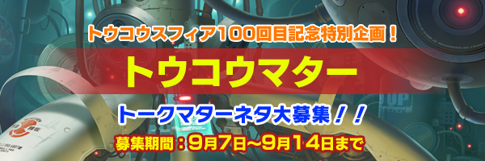
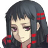

アルポータル
｜
アルトネリコ３公式サイト
今回の記事に関するレスツイートを全部検索する
トウコウスフィア１００回目記念特別企画、トウコウマター！！
そんなわけで、第１００回目のトウコウスフィアでは通常のトウコウスフィアの他に王様ゲームはもちろん、更にトークマターまでやっちゃうことが決まったよ！！
しかも、フラッシュコスモスフィアを使ってね！！
当然トークマターの会話内容に関しては、みんなから募集するよ。
ルカちゃん、説明お願いね。
はーい、それじゃあ説明しまーす。
今回のトウコウマターでみんなから募集をするのは、次の３つだよ。
１・マターのタイトル
２・登場キャラ（最低１人〜最高５人まで）
３・会話の内容についての要望
このうち絶対に書いてもらいたいのはマターのタイトルと登場キャラの２つだけ。
この２つだけを書いてトウコウして採用されると、そのキャラ達でタイトルに合うトークマターのような会話のシナリオが自動的に作られて、１００回目の時にフラッシュコスモスフィアで見ることができちゃうの！！
わかりやすく例を出すと……
タイトル「ガルツベルンに惚れてるの？」
登場キャラ「スズノミア・ティリア・タスティエーラ・ルカ」
こんな感じでＯＫよ。
これでトウコウすると、そのタイトルと登場キャラを元に、ゲーム本編中のトークマターのような会話ができてしまうの。
タイトルと登場キャラさえあれば、勝手にシナリオを作るインスタントトークマター作成機がある、と思ってくれればわかりやすいかもね。
どう、簡単でしょう？
しかも、他のシリーズに出たキャラ同士の組み合わせも出来ちゃうの。
ライナー・クロア・アオトの三人を選んで、タイトルを書いてトウコウすると、本編中では絶対にありえないトークマター感覚で会話をする主人公三人を見ることもできちゃうの。
ここまで説明してわかったとは思うけど、とにかく必須なのはタイトルと登場キャラだよ。
タイトルはゲーム本編でもあったような、ネタに突っ走りそうな感じのものでも平気だから、何でも良いから思いついたらドンドン送ってきてね！！
それじゃあ、必須ではないけど募集する、会話の内容についての要望の説明をするね。
これはタイトルと登場キャラを選んだ後に、そのキャラでどういう感じの話をしてもらいたいか、の要望を書きます。
例えば「恋愛話に持ち込んで最後はラブラブな感じで終わってほしい」とか「最後の最後でアオトさんが失言してしまい限界まで貫かれる」など、マター会話の流れをこうしてほしいとお願いすることが出来ます。
もちろん今言ったような簡単なものではなく、始まりから終わりまでの流れをこと細かく書いてきても大丈夫です。
ただし、これに関しては要望を書いたとしても、採用された際に絶対にその通りに従って作成されるという保障はありません。
要望された流れでは会話に無理が生じる場合、あまりにもキャラ崩壊が酷過ぎる場合、他にも色々な理由で要望を受け入れずにこちらで独自に会話の流れを作成する場合もありますので、その点は十分ご理解ください。

まあ、その辺は大目に見てもらわないと無理だしね。
そもそもうちのインスタントトークマター作成機は、そんなに優秀なマシンじゃないし。
説明は大体こんなところだけど、他に何か質問ある人はいる？
はーい、ココナ気になったことがあるの。
例えばだけど、登場キャラが「ココナ・タツミ」とかで送られてきた場合はどうなるの？
他にも「２のさーしゃ・３のさーしゃ」とか「ミュール・ジャクリ」とか……
外見が違っていれば同一人物キャラを選んじゃってもＯＫだよ！！
だから「ミシャ・ちびミシャ」なんて組み合わせも当然ＯＫ！！
でも「オリカ・オリカ」みたいに外見が同じ場合にはＮＧだよ。
では、最後にまとめです。
トウコウするにあたって必須なもの。
・マターのタイトル
・登場キャラ（１〜５人まで、それ以上書いてある場合はボツ）
必須ではないもの
・会話の内容に関する要望
以上になります。
もしタイトルが思いつかない場合は、ゲーム本編のトークマターのタイトルを見れば何か参考になるかもしれないから、やり直してみるといいかもしれないわ。
それじゃ、みんなから沢山のトウコウが送られてくるのを楽しみに待ってるわ、チャオ☆
トークマターネタ募集は終了致しました。たくさんのご応募有難う御座いました。
 今回の記事に関するレスツイートを全部検索する
今回の記事に関するレスツイートを全部検索する